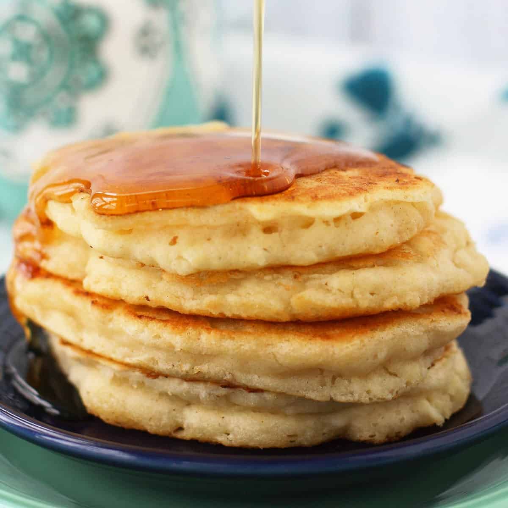

Vegan pancakes

Description
Vegan pancakes are an easy alternative to pancakes. It's is delicious and cruelty-free !
How to make it ?
Ingredients
Flour
Baking Powder
Sugar
Oil or Melted Vegan Buttery Spread
Non-Dairy Milk or Water
Steps
- Place the dry ingredients in a large bowl.
- Add the wet ingredients.
- Stir the batter and let it sit for 5 minutes so it can rise.
- After 5 minutes, the batter will be very puffy, like this:
- Heat some vegan buttery spread in a frying pan over medium heat. Once the buttery spread is sizzling, spoon some batter in. I can usually fry 2 or 3 pancakes at a time.
- After 2-3 minutes, flip the pancakes. They should be golden brown. Cook for another 2-3 minutes so that they are cooked through and golden on both sides.
- Serve with more vegan buttery spread and maple syrup.